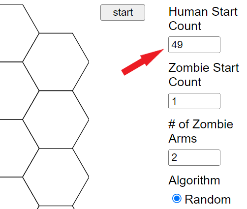
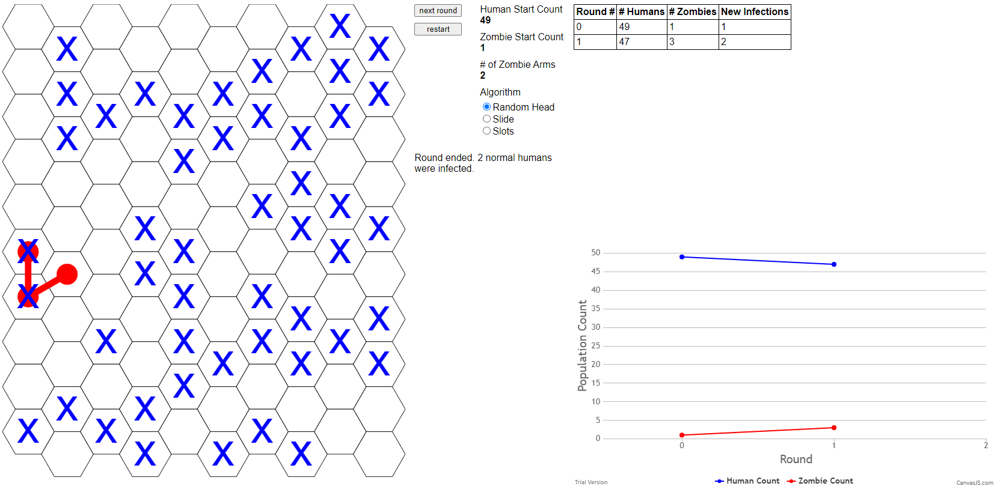
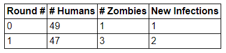
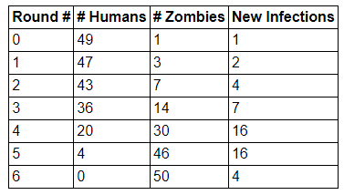
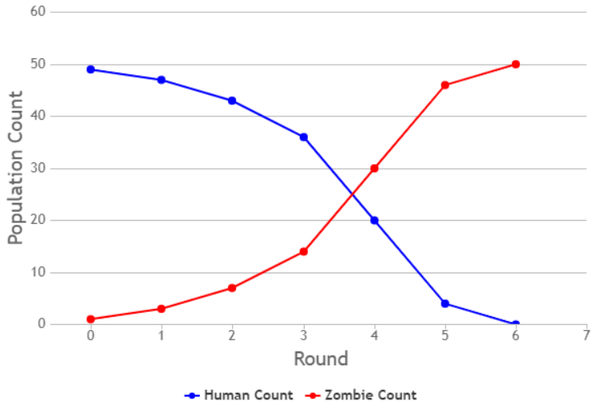
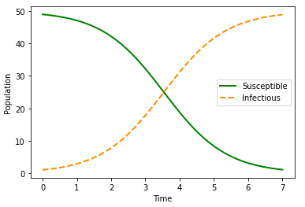

Simulate an outbreak and actively observe the data that emerge
Think through the disease spread process underlying a simulation
Compare the disease spread process with a system of differential equations suggested as a possible model for this process
Consider how changes in the disease spread process can change the outcome
First things first: let’s simulate an outbreak! The simulations in this text, starting with Exploration 2.1, are directly inspired by the Disease Lab materials published freely online by Utah State University. 1
You can do this exploration in a group or on your own. (Groups are recommended, if you are able to team up with one or more other people.) You will model humans, also called Susceptibles, as well as zombies, also called Infectious. The Utah State University link 2
digitalcommons.usu.edu/lemb/1
describes a hands-on way to play this game using dry erase markers and overhead projector transparencies. In this text, we primarily use a related online Zombie Game App 3
nelsong1997.github.io/zombie_game/
4
This app was created by Gabe Nelson, Bates College Class of 2020, after campus closed due to COVID-19.
to play and to generate data.
Why do we start with a simulation? First, this course requires active involvement, so we create space immediately for that involvement. Second, this simulation game can be interactive, and working with others helps us see other perspectives and adds both fun and community to learning. Third, though we mostly work with real-life outbreaks in this textbook, we also purposely diverge from reality to think through hypothetical outcomes, and zombies are one way to think creatively about disease spread. Fourth, this activity generates outbreak examples, and examples throughout this course are one of our main ways to build toward theory and illustrate abstract concepts. Therefore, to achieve the goals for each section, we usually begin with exploration activities, then use what we learned in the explorations to help build our mathematical framework.
Exploration2.1.Zombie Game.
This game uses a grid of 100 hexagons to represent a space in which humans and zombies interact. Each round of game play represents one day. For each day, each human (“Susceptible”) is represented on the grid by a blue “X” on a single hexagon. Each zombie (“Infectious”) is represented by three red dots connected by red lines, meant to suggest a head and two arms, each of which can infect a human. Each zombie spreads out across three connected hexagons. Sample hex grids, both unmarked and marked, appear in Figure 2.1.
. Use the default settings at first, except to change the Human Start Count to 49, as shown in Figure 2.2. Combining these 49 Humans with the Zombie Start Count of 1, the total population then equals 50.

Screen image from the Zombie Game App, showing the “Human Start Count”
Figure2.2.Changing “Human Start Count” to 49 in the Zombie Game App
(b)
To watch the outbreak unfold, day by day, first click start. You will see the zombies and humans placed randomly on the grid. Both a table of data, and a graph of Round 0 and Round 1 data, appear to the right. A sample Round 1 result appears in Figure 2.3, and the table of data is shown more clearly in Figure 2.4. There is randomness in how Zombies and Humans are placed on the grid, so your one-day results on the app may be different.

Figure2.3.Sample output for Round 1 from the Zombie Game App

Figure2.4.Table of sample data from Round 1 of a human–zombie simulation
If you began with 49 humans and 1 zombie, these will be the numbers listed for Round 0. The data for Round 1 are computed by looking at the hex grid: each human that overlaps with a zombie is a “New Infection” and moves from the # Humans category to the # Zombies category. This means that this number of individuals is subtracted from # Humans and added to # Zombies. Double check that your count of new infections matches the app’s count! In Figure 2.3, the one zombie overlaps two blue X hexes. We therefore see that on Round 1 there are two New Infections. We also compare Round 1 with Round 0. The two New Infections for Round 1 mean that the population of “Susceptibles” (that is, humans) drops by 2, from 49 to 47, while the population of “Infectious” (that is, zombies) rises by 2, from 1 to 3.)
(c)
When you are ready, click next round to see a new grid for Round 2. The table of data, and the graph, both update to include Round 2. Continue to click next round at your own pace, thinking through the grid, table, and graph as each step proceeds. The game ends when there are either no humans left to infect, or no zombies left to keep infecting new humans.
(d)
As an alternative to make the game more interactive, the app allows you to choose your own locations for humans and zombies. To choose your own locations, under Mode, check Hotseat instead of Auto. The app then prompts you to place all the Humans for one round of the simulation. After all Humans are placed, the app prompts you to place your Zombies. For each Zombie, you must place the head and the arms. When this is complete, the app shows both Humans and Zombies, to indicate how many new infections have occurred. To make this into a game, two people can play. One person places the Humans, without their partner watching. Then the partner places the Zombies, again without their partner watching. Then, together, the partners can see how many new infections there are, once the Human and Zombie grids are shown together. Is there any strategy that helps either the Humans or the Zombies?
(e)
Try the game one or many times, on your own or with a partner. Copy several resulting data sets, as numbers and as images, so that you can look for patterns.
Section2.1We Now Have Data: Qualitative Musings
You have now had the chance to generate one or many data sets. Take time to examine the data, both in the form of a table and in the form of a graph. Do this with multiple data sets: in a classroom setting, different student groups can share data.
Activity2.2.
Think through the following questions. Spend time trying to answer these before you continue through this book.
Upon viewing multiple sets of data from the Zombie Game App 6
nelsong1997.github.io/zombie_game/
, what patterns do you observe?
Do you have any questions, or guesses, about what might happen in additional simulations in the app?
So far, we have mostly kept the default settings in the app, and played just one version of the hands-on game, but what if we changed the rules for human–zombie interaction? Do you suspect that the outcome(s) could then be different? If so, then in what ways do you think the outcome(s) might change?
In this book, we work with mathematical models. As a first step toward building mathematical models, we should think through the underlying “rules” of our situation. We should also think through any outcomes of these rules. Must these rules always lead to similar outcomes? Could these same rules produce significantly different outcomes? Spending time on understanding our system is a crucial part of making sure our mathematical approaches make sense.
Activity2.3.
In Activity 2.2, some of the first patterns to notice may be about the shapes of the graphs of the Human and Zombie populations as time progresses forward from Day 0. Next, develop responses to the following questions, and explain your reasoning. (If you already thought about these as part of Activity 2.2, great work!)
What can you say about whether the size of each population (Humans and Zombies) is rising or falling?
Can a single population first rise, and later fall (or first fall, and then rise)?
If we tried this simulation many times, in what ways could your results be similar, and in what ways could your results be different?
There are many other things you may notice. To name just a few ideas: you may think about the speed with which each curve rises or falls. You may think about how much these speeds change when you try the game several times. You may relate a rise in one graph to a fall in the other, thinking about a sort of symmetry between the two graphs. You may think about when the rising or falling is relatively slow vs. relatively fast. These and many other observations are a valued and central part of working toward mathematical model building.
Section2.2A First Model
After completing a simulation, you have data for the numbers of humans and zombies during each day of the outbreak. These data can be presented as a table of values, and they can be presented as a graph. In the app, the table format for data appears as in Figure 2.5, and the graph format for data appears as in Figure 2.6.

Figure2.5.Table of sample data from a human–zombie simulation

Figure2.6.Graph of sample data from a human–zombie simulation
As we build a model, we focus on the relatively slow changes in population sizes that happen near the beginning and end of the model. This may not happen in every simulation: for instance, sometimes zombies happen to infect a lot of humans in the last time step. However, in other simulations, one lone human may last for many days before being infected. We focus on what happens on average. For this model, on average, the pace of infection seems slower near the beginning and near the end of the outbreak.
Activity2.4.
One observation is that the pace of infection is slower when there are relatively few humans, or when there are relatively few zombies.
Can you see why it makes sense that infection tends to spread less quickly when there are fewer individuals in one of the populations?
Conversely, why does it make sense for infection to spread relatively rapidly when there are relatively large numbers of both humans and zombies?
To take the discussion about pace of infection to a logical extreme: how fast can infection spread when there are zero humans, or when there are zero zombies?
Putting this all together, we can say that, on average, the change in the number of infections seems to depend on both the number of humans (Susceptibles) and the number of zombies (Infectious). One mathematical approach to writing this is to say that new cases per day are proportional to the number of Susceptibles multiplied by the number of Infectious. We can write this as follows:
To turn this into a mathematical formula, we will use a system of ordinary differential equations. This is a good time to mention: to read and learn from this text, there is no need to have taken a course on differential equations. To write and work with the models we use, it is sufficient to know these ideas from calculus:
derivatives represent change;
an increasing graph has a positive slope and a derivative greater than zero;
a decreasing graph has a negative slope and a derivative less than zero; and
a horizontal graph (one in which the output value is not changing) has a slope of zero and a derivative equal to zero.
One other helpful piece of information is the fact that a differential equation is just an equation containing a derivative. Many of the equations in calculus contain a derivative. A quick example is \(f'(x)=3x+2\text{,}\) which contains the derivative \(f'(x)\text{.}\) This means that if you have studied calculus, then you have already built significant experience using differential equations.
With these calculus ideas in mind, we return to our model. We will write two equations, one to represent the change in the Susceptible population and one to represent the change in the Infectious population. When we say “change”, we mean the change that happens on average if we were to run the simulation many times. Our independent variable is time, which we label \(t\text{.}\) You may have noticed that time is the variable on the horizontal axis: this axis is labeled “Round” in the app, and it represents time in the form of days. For our dependent variables, we choose letters that correspond to the names of each population. This makes the dependent variable meanings easier to remember, and for many people, it makes the differential equations easier to interpret. Therefore let \(S = S(t)\) represent the Susceptible population and \(I = I(t)\) represent the Infectious population. Since our populations are represented by the letters \(S\) and \(I\text{,}\) we call this model an SI model. We say the names of each of the first two letters when saying “SI model” aloud, that is, we say “S” “I” “model”.
You may have noticed that our data show us not just total numbers of \(S(t)\) and \(I(t)\) at each time step, but also show how \(S(t)\) and \(I(t)\) change over time. The number of New Infections tells us precisely how many people change, on each day, from the \(S(t)\) population to the \(I(t)\) population. We now connect \(S(t)\text{,}\)\(I(t)\text{,}\) and the number of New Infections using differential equations and the proportionality relationship from (2.1):
\begin{align}
\frac{dS}{dt} \amp = -\beta S I \tag{2.2}\\
\frac{dI}{dt} \amp = \beta S I \tag{2.3}
\end{align}
There is a lot of calculus happening in these SI model equations! Here are some of the key ideas to notice.
The derivative term \(dS/dt\) represents the change, across time, in population \(S(t)\text{.}\)
Similarly, the derivative \(dI/dt\) represents the change, across time, in population \(I(t)\text{.}\)
In this model, individuals leaving \(S(t)\) go immediately into \(I(t)\text{,}\) which is why the same term \(\beta S I\) appears on the right-hand side of both equations.
Individuals can only leave \(S(t)\text{,}\) so \(S(t)\) decreases, and \(dS/dt\) is negative. We actually see the negative sign (\(-\)) written into the differential equation.
Individuals can only enter \(I(t)\text{,}\) so \(I(t)\) increases, and \(dI/dt\) is positive. We do not explicitly write a positive sign (\(+\)), but we note that there is no negative sign (\(-\)).
The values of \(S(t)\) and \(I(t)\) should never be negative. They should be either positive or zero. This makes sense because they represent populations of individuals. This must also be true mathematically, in order for the model to make sense.
We represent the idea of proportionality by using the parameter \(\beta\text{.}\) We will experiment in Chapter 3 with different values of \(\beta\) to see how changing \(\beta\) affects the outcomes of the model.
The value of \(\beta\) must be positive. This observation is consistent with us directly seeing the negative sign (\(-\)) when a term is negative, and not seeing the negative sign when a term is positive. (With this observation, it could be possible for \(\beta\) to be 0, but if there is any outbreak and any interaction of \(S(t)\) with \(I(t)\text{,}\) then \(\beta\) will not be 0.)
This model uses differential equations, which think of time as continuous, using every real value for \(t\) starting at \(t=0\text{.}\) By contrast, when we collect data from the zombie game, time is discrete, meaning that time steps forward through values such as “Day 0”, “Day 1”, “Day 2”, and so on. In this course, we mainly use differential equation models, meaning time is thought of as continuous. Continuous time may match well with our intuitive sense of how time works: time does not stop and start. However, the data we collect about disease spread will often be discrete, on time scales such as days or weeks. We will include this knowledge in our work with models.
Activity2.5.
Figure 2.7 shows one possible graph of the SI model, with \(\beta\) selected so that the graphs in Figure 2.6 and Figure 2.7 are fairly similar. Compare these two graphs, thinking through the questions below.

Figure2.7.A sample graph of the SI model, drawn using Equations (2.2) and (2.3).
The curves in Figure 2.7 are smooth, whereas the graphs shown in Figure 2.6 are less so. Why is this?
The SI model, as described in Equations (2.2) and (2.3), provides formulas for \(dS/dt\) and \(dI/dt\text{.}\) Yet the graph in Figure 2.7 shows solution curves for Susceptibles and Infectious, that is, \(S(t)\) and \(I(t)\text{.}\) Describe how the formulas for \(dS/dt\) and \(dI/dt\) in the SI model correspond to the solution curves \(S(t)\) and \(I(t)\) shown in Figure 2.7.
Throughout the human-zombie simulation, there are exactly 50 people at all times. Explain how this feature of the simulation appears in both Figure 2.6 and Figure 2.7.
Continue to comment on comparisons, similarities, and differences between Figure 2.6 and Figure 2.7. There are no specific “right answers” here: this is open-ended exploration, building intuition and understanding for the interactions among data, graphs, and a differential equations model.
For Further Thought2.3For Further Thought
1.
Vary the zombie simulation so that zombies have only one arm. In this case, the app represents each zombie by two connected dots, rather than three connected dots. We can change the “# of Zombie Arms” in the app from 2 to 1. Complete one or more simulations with this change. Collect and graph the simulation data. How do your results compare with the results from simulations in which zombies have two arms? Write about your results. Include graphs and tables of data, in the style of Figure 2.6 and Figure 2.5, as part of your comparison.
2.
What other variations can you imagine creating in this game? Describe how the game changes, and connect each game change with what it would mean in the “real-world” scenario of a zombie outbreak.
How might your mathematical model change in order to match this change in the game? In other words, how might your differential equations change?
How might long-term outcomes for humans and zombies change, if at all?
Support your thoughts, to the best of your abilities, using the data and graphs you generate from simulating your changes to the game.
3.
Spend more time examining and thinking about the graph of the SI model, as shown in Figure 2.7.
Since \(\beta\text{,}\)\(S\text{,}\) and \(I\) cannot be negative, we recognize that \(-\beta S I\) must be either negative or equal to zero. Explain what these observations indicate about the Susceptibles graph in Figure 2.7, using Equation (2.2) as part of your explanation.
Since \(\beta\text{,}\)\(S\text{,}\) and \(I\) cannot be negative, we recognize that \(\beta S I\) must be either positive or equal to zero. Explain what these observations indicate about the Infectious graph in Figure 2.7, using Equation (2.3) as part of your explanation.
In Chapter 3 we will vary the value of \(\beta\) in the SI model. Try to predict some of the ways in which changing \(\beta\) will change the outcome of the SI model. How will the solution curves in Figure 2.7 change as \(\beta\) increases? How will the solution curves in Figure 2.7 change as \(\beta\) decreases? (Though the value of \(\beta\) changes, your discussion should keep \(\beta > 0\text{.}\))